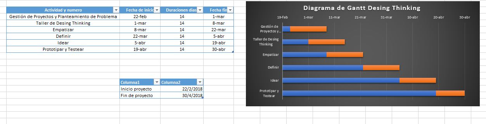

Idioma: Español
This project is aimed at the public sector, towards people suffering from home robberies, because over time it was observed that crime in our country is increasingly dangerous and many suffer robbery having material losses and even human lives.
Gantt chart
We chronogram our activities until prototyping and testing
Social impact
This type of security system is aimed at both homes and young people who have a smartphone, because it focuses on the protection of these. The current systems are connected to the internet network and GPS, all by technology. In this case it is presented a mini-alarm of autonomous operation to avoid failures due to satellite network failure, internet and electrical network.
We increase security in homes and also avoid cell phone losses.
We counteract the rates of theft in our homes.
We provide a solution to the problem of losing or forgetting a cell phone.
Economic Impact
It is competitive with conventional alarms present in the Arequipa market
If manufactured in larger quantities, it would become more profitable because its cost would be reduced.
Being a new and innovative product, it would attract more attention and be more profitable
The mobile anti-lost system has no current competition, as only one model was presented outside the country. Therefore it would be more profitable because it is a simple system of use that does not require a software as it is currently seen.